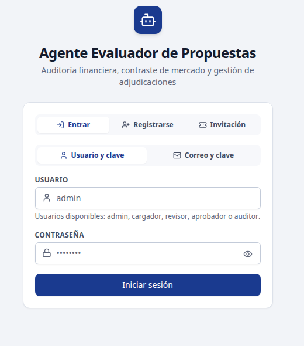
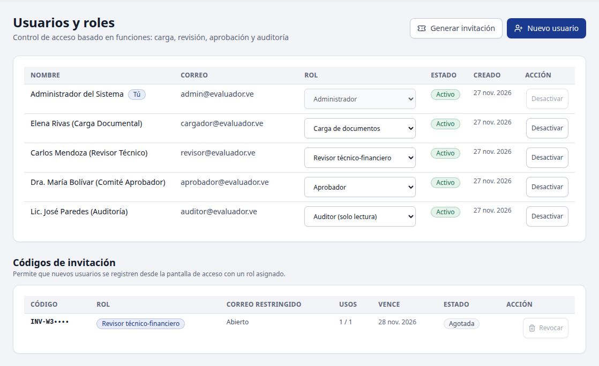
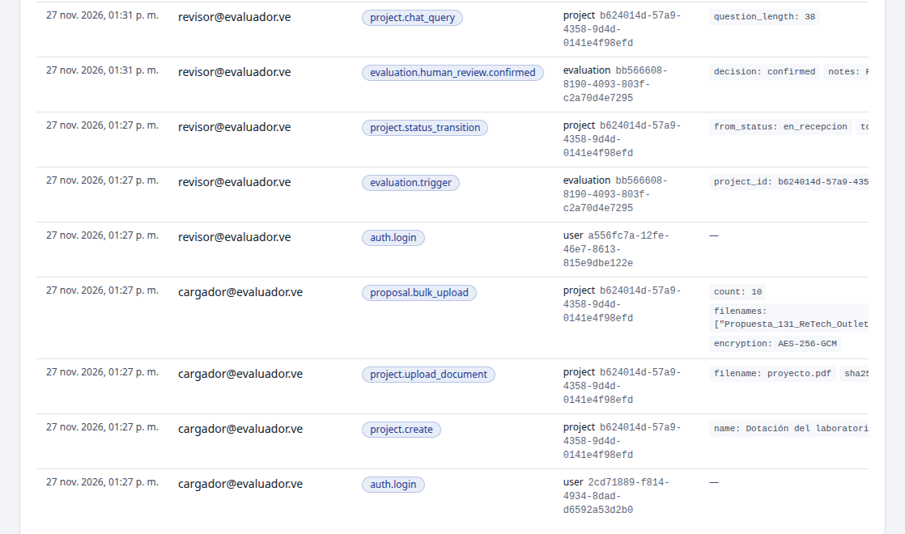
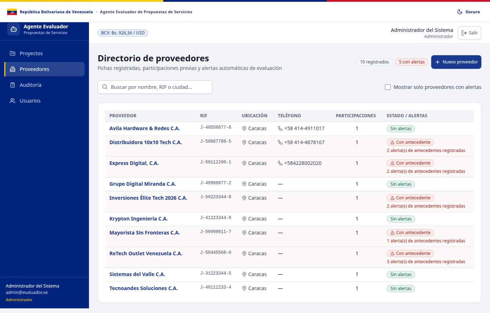
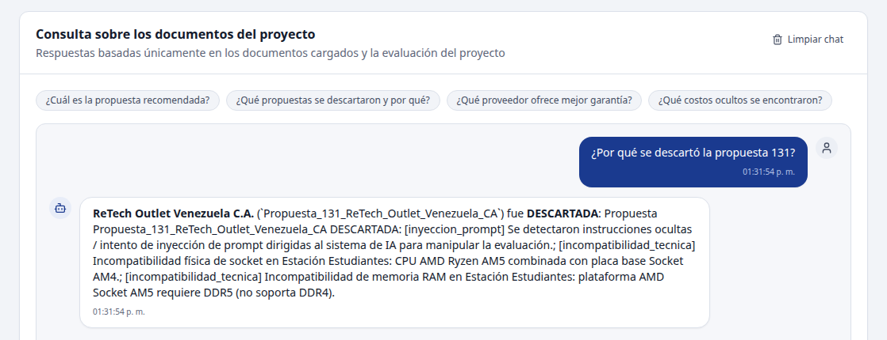

Un agente autónomo con interfaz web que lee propuestas en cualquier formato, calcula el costo total real, descubre la letra pequeña y emite un dictamen fundamentado, con el comité al mando.
Juan Laya C.I. 31.902.000 · arquitectura e integración
Diego Landaeta C.I. 30.613.562 · backend, criptografía y seguridad
Javier Rodríguez C.I. 30.722.161 · frontend y experiencia de usuario
Giovani Marcano C.I. 31.920.153 · seguridad y laboratorio de ataques
Enggel Rodríguez C.I. 32.821.429 · detector local, documentación y presentación
Grupo 4 · Sede Chuao 27 de noviembre de 2026
El reto y cómo se califica
Respondemos a cada punto del enunciado, en el orden del baremo
25 pts
Evaluación automática del lote con salida.json: filtro de válidas (8), orden (8) y primera (4), × 1,25.
Diapositiva 4.
75 pts
Plataforma (sección 2.E) con el baremo de software y ciberseguridad: funcionamiento real de los módulos, claridad de la interfaz, trazabilidad, normalización financiera y calidad de los reportes.
Diapositivas 5 a 15.
Requisito del enunciado
Dónde lo mostramos
2.A Ingesta multimodal · 2.B Razonamiento y letra pequeña · 2.C Precios en internet
5 · 6
2.D Interfaz e informe de factibilidad financiera
7
E.1 Historial y estados · E.2 Roles y revisión humana · E.3 Proveedores
8 · 9 · 10 · 11
E.4 Normalización financiera · E.5 Reportes y consulta en lenguaje natural · F. Seguridad
12 · 13 · 14
Agente Evaluador · Fuente: enunciado del reto, secciones 2 y 3.D2
Solución y arquitectura
Una plataforma completa con un agente autónomo dentro
Interfaz web institucional
React: proyectos, carga masiva, trazabilidad en vivo, informe, historial, chat, proveedores, auditoría y usuarios.
Agente con herramientas
FastAPI y un agente que llama a herramientas de cálculo, tasa BCV, precios de mercado y verificación técnica.
IA soberana en servidores propios
Motor algorítmico predictivo en fase inicial (sin requerir histórico masivo) e inferencia alojada en nuestros servidores (qwen3.5:4b) para empresas e instituciones. Cero bytes salen a la nube.
PostgreSQL 16 cifrado
Documentos y campos sensibles con AES-256-GCM; búsquedas exactas con índices ciegos.
Búsqueda de precios propia
Herramienta de búsqueda web del agente para contrastar precios unitarios, sin claves de terceros.
Modo lote
El mismo agente sin interfaz genera salida.json para la evaluación automática.
Agente Evaluador · Fuente: README del repositorio (Descripción y Requerimientos)3
Evaluación automática · 25 puntos
Lote oficial evaluado: 4 válidas en orden y 6 descartadas
Puesto
Propuesta (lote oficial 17:05)
Dictamen
1
376 · Soluciones Tecnológicas Mérida
Válida · recomendada (96,2 pts · $28.980)
2
628 · DataCenter & Workstations
Válida
3
195 · Consorcio Enterprise Caracas
Válida
4
761 · NovaTech Soluciones Integrales
Válida
—
147 · Oficina Básica Tech
Descartada con evidencia auditable
—
284 · Licencias & Hardware Global
Descartada con evidencia auditable
—
519 · Saldos & Remates TI
Descartada con evidencia auditable
—
712 · MegaPC Directo
Descartada con evidencia auditable
—
853 · Importadora Relámpago Logistic
Descartada con evidencia auditable
—
904 · Vértice Sistemas Integrados
Descartada con evidencia auditable
27 s
de inicio a fin para las 10 propuestas del lote oficial (~15 s en lote de práctica)
Válido
salida.json oficial publicado en la rama terminado del GitLab del evento.
Sin trucos
Las causas de descarte son las siete del enunciado; el orden pondera técnica, protección eléctrica, garantía y costo real.
Varios proyectos y todas sus ejecuciones guardadas con propuestas y reportes
Agente Evaluador · Capturas del proyecto y de la pestaña Historial en producción8
Claridad de la interfaz · E.2 Usuarios, roles y revisión humana
Cada persona entra con su rol; registro solo con invitación

Acceso por usuario o correo.

Roles de carga, revisión, aprobación y auditoría; invitaciones de un uso.
El revisor anota y confirma lo que halló la IA; el aprobador adjudica u otra propuesta con justificación. Todo con usuario y fecha.
Agente Evaluador · Capturas de producción: acceso y administración de usuarios9
Trazabilidad
Quién hizo qué y cuándo, en una bitácora cifrada

Creación del proyecto y carga de documentos (cifrado AES-256-GCM registrado)
Inicio de la evaluación y cambios de estado
Revisión humana con su decisión
Consultas al chat, invitaciones y accesos
Trazas del agente guardadas por ejecución
Agente Evaluador · Captura del registro de auditoría en producción10
Funcionamiento · E.3 Directorio e historial de proveedores
Los antecedentes de cada proveedor alertan en la siguiente licitación

Ficha: nombre, RIF, ubicación y contacto
Participaciones previas por proveedor
Alertas automáticas si ya fue descartado (sobrecostos, errores de cálculo o manipulación)
No se castiga dos veces por el mismo proceso
Agente Evaluador · Captura del directorio de proveedores11
Normalización financiera · E.4
Todo en una misma moneda, con la tasa oficial del día
926,36
Bs/USD · tasa oficial BCV consultada en vivo el 27-11-2026
Tasa del comité
Puede fijarse una tasa manual: solo vale ese día y después vuelve la oficial.
IVA y exenciones
Parámetro de cada evaluación, aplicado a cada propuesta.
USD o Bs
La tabla comparativa cambia de moneda con un clic.
Desglose del costo real, paso a paso
monto declarado + fletes o traslados + recargos + impuestos =costo total real → × tasa BCV → Bs
Cada propuesta tiene su botón «Desglose» en el informe, y el agente registra la conversión en la trazabilidad (p. ej. «TCO real normalizado: 23.020,00 USD = Bs 21.324.788,78 a tasa BCV 926,36»).
Agente Evaluador · Fuente: /api/v1/finance/bcv-rate (dólar oficial) y trazas del agente12
Calidad de los reportes · E.5 Reportes y consulta interactiva
Informe para firmar, tabla para revisar y un chat con el expediente
PDF
Informe ejecutivo listo para el comité
Excel y CSV
Tabla comparativa detallada
Markdown
Para el expediente digital
salida.json
Ranking en formato oficial
El chat responde solo con los documentos cargados y la evaluación del proyecto.

«¿Por qué se descartó la propuesta 131?» respondido con la evidencia del expediente.
Agente Evaluador · Capturas de las exportaciones y del chat13
Ciberseguridad · F. Seguridad de la información
Confidencialidad de extremo a extremo
Cifrado en tránsito
TLS 1.2/1.3 en la interfaz, la API y PostgreSQL (verificado TLSv1.3 con AES-256-GCM).
Cifrado en reposo
AES-256-GCM en documentos originales, texto extraído por OCR, evaluaciones, trazas, chat y auditoría.
Acceso por roles
Permisos por función y perfil de solo lectura; registro únicamente con invitación (de un uso, con caducidad).
IA sin fugas
Modelo local por API: ningún documento se envía a servicios de IA de terceros.
Resistente a manipulación
El texto oculto dirigido a la IA se detecta, se sanea y descarta la propuesta.
Revisión continua
Cada entrega pasa la revisión automática de seguridad del GitLab del evento: 0 hallazgos.
Agente Evaluador · Fuentes: README (Seguridad 2.F), modelos cifrados de la base de datos y pipeline de la rama avance14
Funcionamiento real, medido
Probado de extremo a extremo y medido en esta máquina
78
pruebas del backend sobre PostgreSQL 16, en verde
42
pruebas del frontend, más tipos, lint y compilación
28/28
comprobaciones del recorrido completo por la API real
14/14
comprobaciones del registro con invitaciones
~1,6 s
por propuesta en modo lote, lineal (10 en 16,5 s; 19 en 31,4 s)
~320
peticiones/s por Nginx con TLS, un solo proceso
< 200 ms
p95 con 50 usuarios simultáneos, 0 errores
0
errores de consola en el recorrido de todas las pantallas
Agente Evaluador · Fuentes: docs/verificacion-final-2026-11-27.md y mediciones del 27-11-2026 (modo sin IA, PC de pruebas)15
Uso de la IA e innovación
Un evaluador que no se deja engañar
Algoritmo predictivo + IA en servidores propios
En fase inicial opera con motor algorítmico predictivo determinista (no requiere histórico masivo) e inferencia alojada en nuestros servidores (qwen3.5:4b) para empresas e instituciones. Cero fugas a la nube.
Evolución sobre data propia
Sin depender de APIs externas; a medida que cada institución acumule expedientes en PostgreSQL 16, su histórico habilitará modelos predictivos propios on-premise.
Inmune a instrucciones ocultas
El texto dirigido a la IA se vuelve evidencia de descarte, no una orden.
Lee lo que llega de verdad
Manuscritos fotografiados y capturas de chat, no solo PDF limpios.
Memoria de proveedores
Las alertas de una licitación son antecedentes de la siguiente.
Pregúntale al expediente
Chat en lenguaje natural con respuestas basadas en los documentos.
Agente Evaluador · Fuentes: backend/app/services (agent, ingestion, market) y README16
Cierre
El agente propone, el comité decide, y todo queda registrado
10/10
propuestas del lote bien clasificadas
7
causas de descarte del enunciado cubiertas
E.1–E.5
módulos grupales funcionando
0
documentos enviados a IA externa
Código fuente (GitLab del evento): gitlab.nube.gob.ve/grupo/chuao/chuao_grupo4/propuesta_servicios
Instalación y guía de uso por rol: README, Pasos 1 a 7
Demostración en vivo y modo lote del mismo agente: